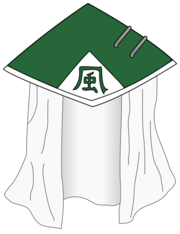

O Kazekage (風影; Literalmente significa "Sombra do Vento") é o Kage de Sunagakure, um título concedido a líder da aldeia. Houveram cinco Kazekage até agora e são geralmente considerados como os shinobi mais fortes na história da aldeia.
A posição Kazekage foi criado logo após a formação de Sunagakure por Reto, o fundador da aldeia, sendo no anime o último dos Cinco Kage a surgir.[1] Embora não seja expressamente declarado como é selecionado um candidato ao cargo, em Gaara Hiden é sugerido que a posição Kazekage é hereditária, ou pelo menos que parentes do Quarto Kazekage são mais adequados para o posto; esta linhagem é referida como o "Clã Kazekage". Caso o ocupante do posto seja morto ou dado como desaparecido após um longo período de tempo, o próximo Kazekage é escolhido pelo Conselho de Suna. Uma vez assumida os deveres do cargo, eles geralmente se deslocam para o Gabinete do Kazekage.
Ao longo da história, os Kazekage ganharam a reputação de serem temidos e respeitados em todo o mundo, devido sua responsabilidade por manter Sunagakure em pé de igualdade com as outras aldeias, apesar de seu pequeno tamanho. No entanto, o título é por vezes considerado amaldiçoado, já que todos os Kazekage, inclusive o atual, tiveram morte prematura pelas mãos de assassinos.[2] O Kazekage conta com o Conselho de Suna para decidir os assuntos da aldeia em ínterim. As estátuas encorpados de todos os ex-Kazekage são mantidas na câmara de reunião do conselho.
Reto (烈斗, Reto) foi o Primeiro Kazekage (初代風影, Shodai Kazekage, Literalmente significa "Primeira Sombra do Vento") que fundou Sunagakure no País do Vento, e dito ter reunido todos os shinobi que moravam no deserto sob seu controle com o seu poder avassalador.
Shamon (沙門, Shamon) foi o Segundo Kazekage (二代目風影, Nidaime Kazekage, Literalmente significa "Segunda Sombra do Vento") de Sunagakure. Ele foi o primeiro a pesquisar sobre Jinchūriki, em uma tentativa de aumentar consideravelmente o poder da vila.
O Terceiro Kazekage (三代目風影, Sandaime Kazekage; Literalmente significa "Terceira Sombra do Vento") era o líder de Sunagakure e é saudado como o mais forte Kazekage da aldeia. Quarto Kazekage Editar
Rasa (羅砂, Rasa) foi o Quarto Kazekage (四代目风影, Yondaime Kazekage; Literalmente significa "Quarta Sombra do Vento") de Sunagakure. Reconhecido por sua capacidade de usar Pó de Ouro, o reinado de Rasa como Kazekage foi marcado por conter os ataques frenéticos do Shukaku de Uma-Cauda, que ele havia selado em seu filho mais novo, Gaara.
Gaara (我爱罗, Gaara) é um shinobi de Sunagakure. Ele foi feito jinchūriki do Shukaku de Uma-Cauda antes de nascer, fazendo com que os moradores de Suna temê-lo como um monstro. Sem ninguém com se conectar, Gaara cresceu odiando o mundo e olhando apenas para si mesmo, justificando sua própria existência em matar qualquer um que se deparava. Depois de ser derrotado por Naruto Uzumaki - um jinchūriki como ele que encontrou força em suas amizades - Gaara começou a se espelhar nele. Ele então se torna o Quinto Kazekage (五代目风影, Godaime Kazekage; Literalmente significa "Quinta Sombra do Vento") para que possa proteger a vila e todos aqueles que vivem lá, dissipando os temores que lançou sobre os aldeões.